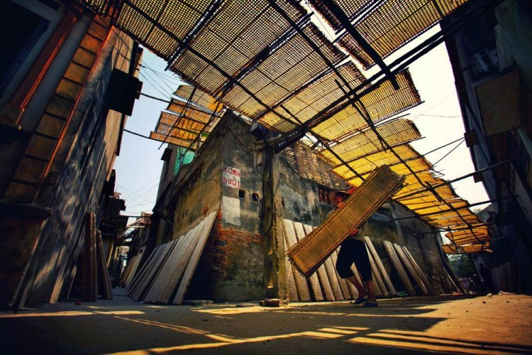

Làng Thổ Hà


Thổ Hà là một ngôi làng cổ với phong cảnh hữu tình, cây đa, bến nước, sân đình, những nếp nhà cổ san sát nằm sâu trong các ngõ hẻm cổ kính. Khác với các làng ở đồng bằng Bắc Bộ, dân Thổ Hà hoàn toàn không có ruộng, bao đời sống bằng gạo chợ nước sông, thu nhập từ nghề thủ công và buôn bán nhỏ.Làng Thổ Hà là một ngôi làng cổ lâu đời, với cây đa, bến nước, sân đình, những nếp nhà cổ nằm sâu trong ngõ hẻm rêu phong... mang đậm nét đặc trưng của một làng quê Việt, và còn lưu giữ những giá trị văn hóa truyền thống đặc sắc, trở thành địa danh hấp dẫn của du lịch Bắc Giang
Thông tin chi tiết
| Địa chỉ | xã Vân Hà,huyên Việt Yên,tỉnh Bắc Giang |
|---|---|
| Giờ mở cửa | 24/24 |
| Phí dịch vụ | Miễn phí |